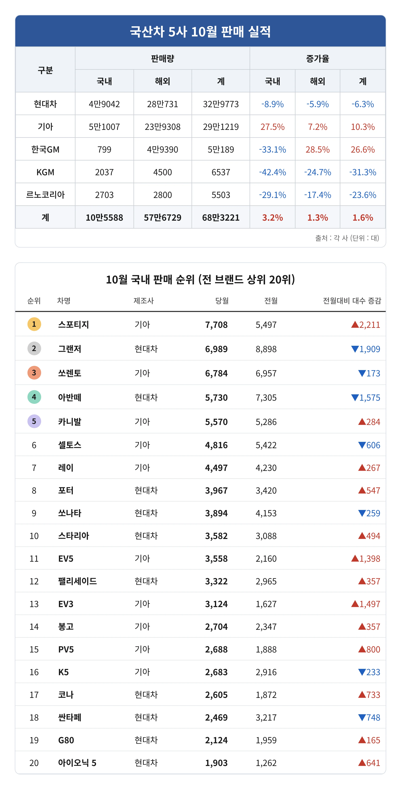
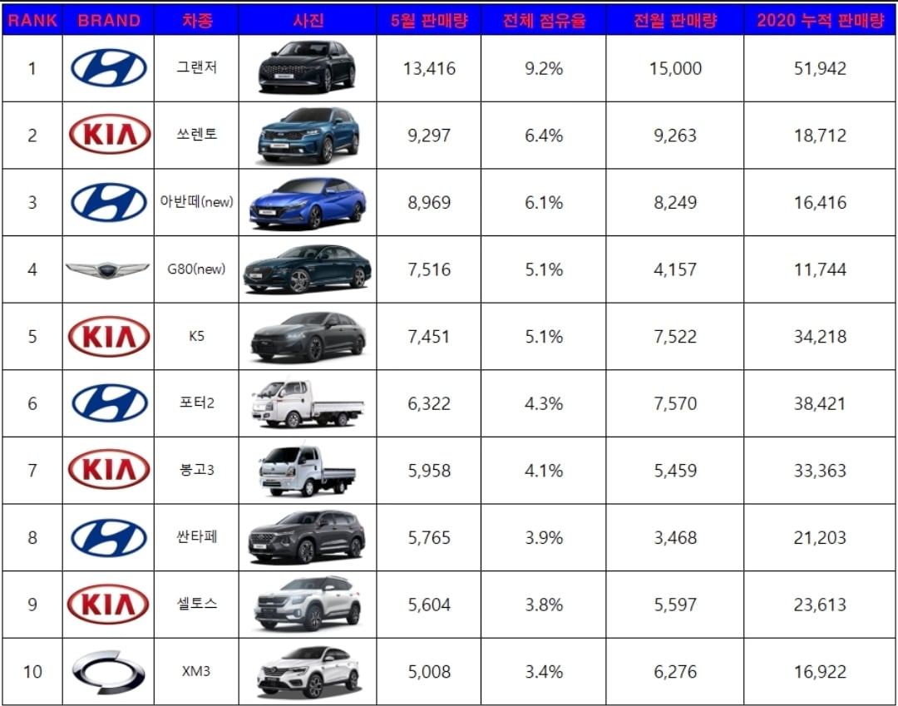
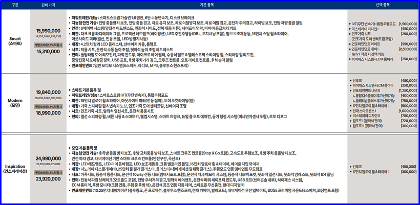
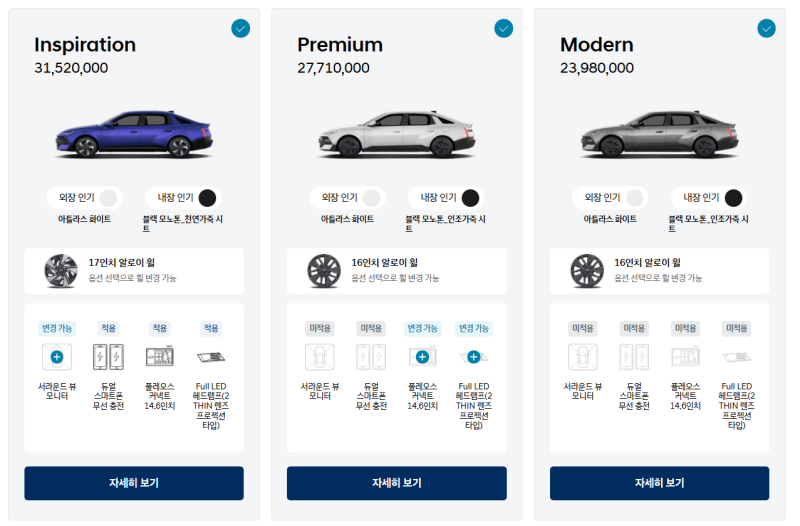

할인 똥꼬쇼하는 이유 나왔죠?

같은 2달차 cn7성적표 (20년 5월)


사람들은 아반떼에 큰걸 바라는게 아닌데
걍 싸고 사람처럼 탈수있는 차라서 사는거임

할인 똥꼬쇼하는 이유 나왔죠?

같은 2달차 cn7성적표 (20년 5월)


사람들은 아반떼에 큰걸 바라는게 아닌데
걍 싸고 사람처럼 탈수있는 차라서 사는거임
솔직히 요즘 차들 너무 큼. 가뜩이나 주차공간 없고 구축 아파트들 주차선 좁고, 골목길에 불법주차까지 많은데 차까지 다 크게만드니까 답도없음. 일본처럼 경차보급 많아지면 좋겠음... 근데 우리나라사람들 경차타면 도로에서 무시하고 그지취급한다는 인식이 강해서 더 안사는듯.
경차 내놔도 안팔려서 단종하는 추세라..
난 2년전에 임팔라 팔고 캐스퍼 2대 구매해서 굴림 우리나라 에선 적당한거 같음
하지만 저번에 아반테 렌트 해서 타보니 좋긴 좋더라 아반떼가 그랜져 만큼 좋아 보였음
이미 베뉴가있음에도 잘안보임
베뉴는 풀체든 페리든 한번 해줘야 팔릴듯
근데 그럼 가격 또 날아올라서 더 안팔릴려나
애초에 판매량이 저조해서 단종수순아닐까싶음
캐스퍼 사고싶은데 대기보면 답도없더라..
순위표에도 나오지만 실세는 레이임. 캐스퍼 진짜 좁다. 말도 안돼게 좁다.
근데 물가상승대비하면 별로 안오름
투싼이 미친가격으로나와서 그돈씨되버림ㅋㅋ
CN8덕분에 미친가격으로 나올수 있던것
그렇긴 한데 다른 차들이 차값을 낮게 내거나 할인을 엄청 떄려서 가성비 에서 그돈씨가 되어버림.
cn7페리가 디자인 가격 성능면에서 고트였는데
CN7페리 N라인 진짜 디자인 고트
2.0 트롤짓에 계기판 이슈에 걍 안팔라고 온몸비틀기하는데 팔리는게 대단하지
2.0은 글로벌 단일화 하려고 햇다더라
아마 쏘나타랑 합병수순이되지않을까
자동차세가 두배 넘게 뛰는데...
국내보단 글로벌에 맞추겟단소리지뭐...
꼬우면 하브가란소리
싼타페도 절라 많이 보이는 편인데 판매량 저조한게 신기함
스울 살다보니 1년에 차 10번도 안써서 팔고 모닝이나 하나 살까 했는데 별론가
그 정도면 소카나 랜트 해
가격이랑 플레오스같은건 걍 현대차가 현실직시 못하고 방향설정 병신같이 했고, 자율주행은 좃도 할 능력도 생각도 깜냥도 없다는 부차적인 문제임
딴거보다 차 크기 무게가 커졌으면 내구성 좀 떨어져도 dct를 넣거나 오토 기어를 넣어줬어야 하는데 cvt가 왠말이냐?
물론 아반떼 사는 대다수의 수요층은 cvt가 뭔지도 관심 없긴 하다만.
출력엄청 낮아서 괜찮지않음?
그니까 차급을 탈준준형수준으로 올리겠다? 그건 그럴 수 있음
근데 그런 차에2.0na쳐박고 150마력에 cvt 쳐박은 거 자체가 문제라고 보는거 ㅇㅇ...
ㄹㅇ 6단이라도 넣지
아반떼 주 수요중 하나가 영업용 법인차인데
이 수요들이 byd로 넘어간게 크지
그냥 2차 페리하면서 버텼어야함
나도 현기차 존나 좋아하고 계속 현대차만 타고 다녔는데
이번 아반떼는 진짜 개병크 맞다..
아반떼 담당한 임원새끼 짤려야될듯
사회 초년생이 입문하기 가장 좋은 차가 아반떼고
그 아반떼 상품성으로 결혼, 출산, 육아, 은퇴까지 쭉 현대차 이미지를 만든건데 뭐하는 개짓거린지
아엔사라 cn8 풀옵보다 싸다
Dct에 280마력 2.0t에 lsd까지 낭낭하게 들어가있는데 ㄹㅇ 아N거르고 cn8사면 바보임
GM은 해외로 먹고사네 뷰익나오면 살까했는데 쉐슬람이라
안사주면 가격은 어차피 떨어지긴해 ㅋㅋ..
cn8이 뭔 차여?
아반떼 신형
아반떼
그랜저가 앵간치 팔리니까 아반떼 급 생각안하고 장난질쳤다가 ㅈ됐나보네 아반떼가 몇달된 그랜저보다 안팔리네 ㅅㅂㅋㅋ
아엔각임
전략 실패지.. 아반떼를 굳이..
아반떼는 싸게인건데 차유튜버들 풀옵 호들갑, 할로겜 램프 호들갑, pleos 호들갑, 토션빔 호들갑 하는거보면 가격상승을 유튜버들이 일부러 부추기는거임. 진짜 호들갑 씨발임. 온갖 호들갑은 다떨어놓고 자기들이 타는건 bmw, 벤츠 이지랄
ㅋㅋㄹㅇ 그래놓고 중국차 평가는 정말 유함
달달한 중국의 젖꼭지
쏘나타 단종 수순 밟겠다고 엔진 cc올렸으면 최소한 6단자동 미션에 멀티링크는 달아줘야 됐다고봄.
차가 시발 주행성능이 받쳐주고 그 뒤에 옵션이 있는거지 2.0에 CVT 토션빔은 뭔 환장의 콜라보임?
아반떼가 마지막이든 소나타가 마지막이든
과도기에나온 ㅂㅅ같은 작품인듯
이쯤되면 일부러 쥬가를 낮추기위한 그림아닐까